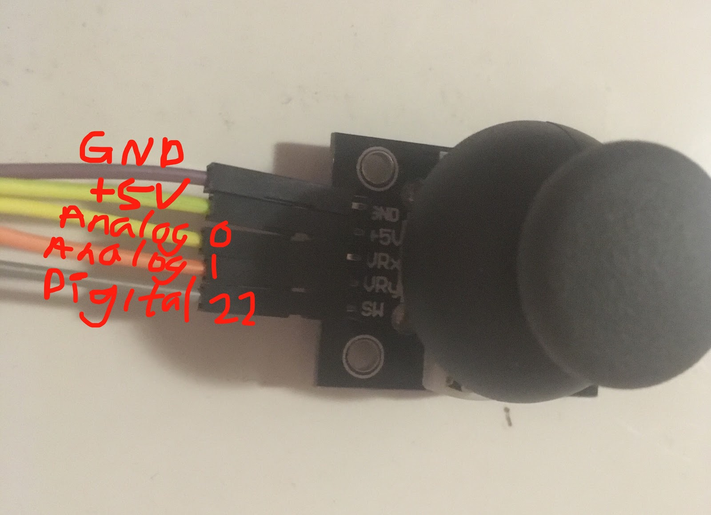
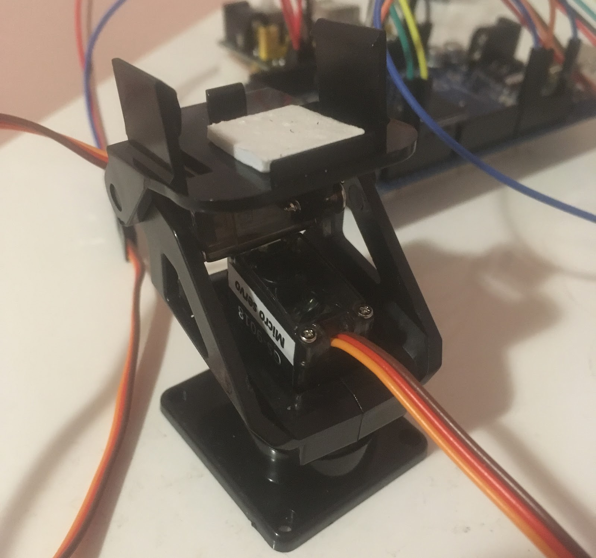
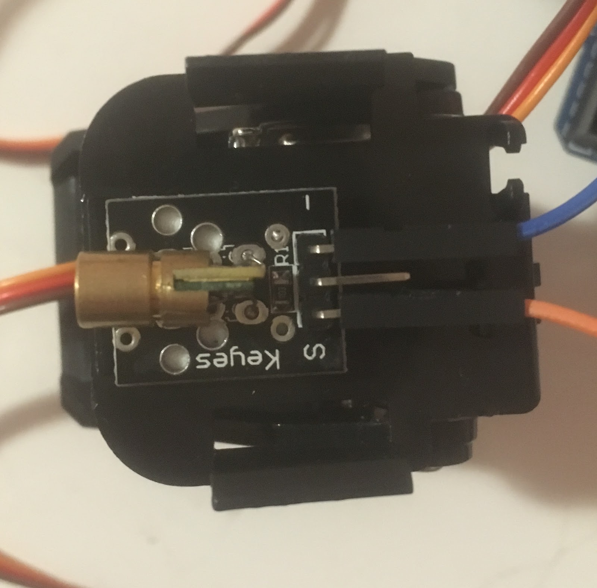
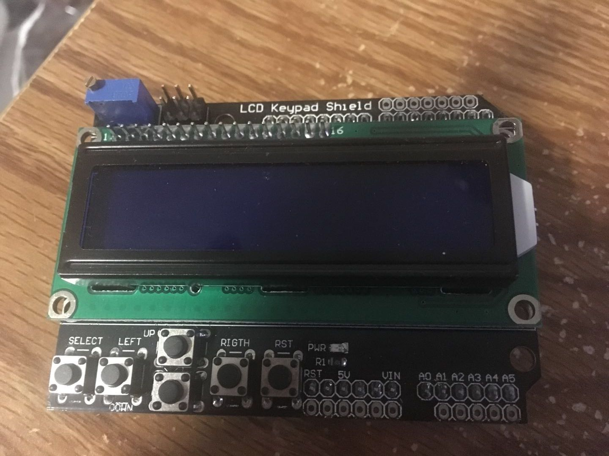
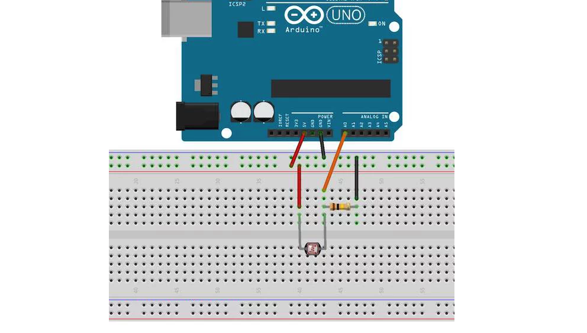
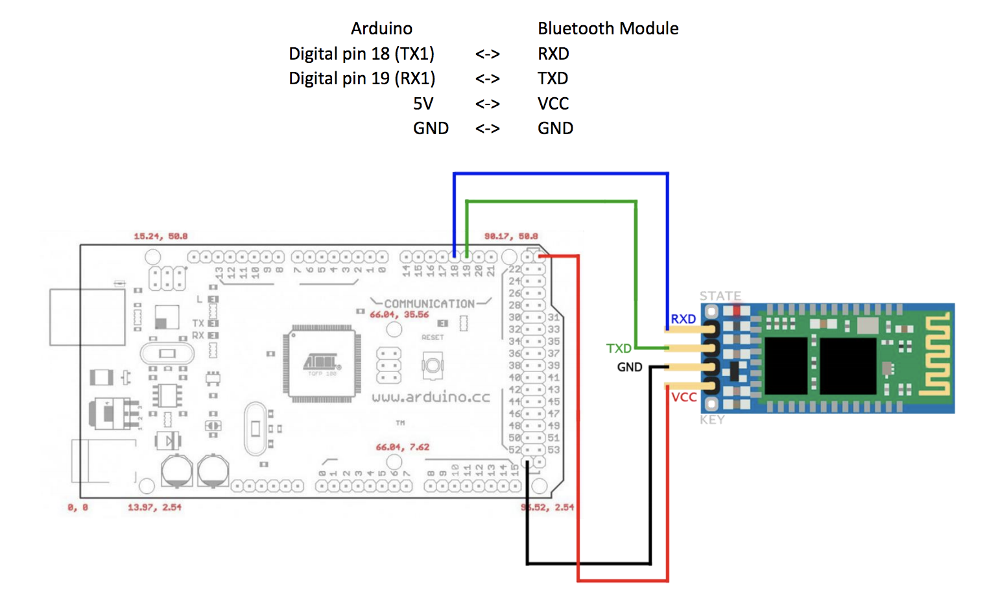

Joystick setup and wiring was easy. A joystick has 5 pins: GND, VCC, VRx, VRy, and SW. VCC and GND pins are connected to +5V and ground respectively. VRx and VRy are two pins that transfer x and y values of the joystick. The x y value range of the provided joysticks are from 0 to 1023; therefore, they are connected to two analog pins on the ATMega 2560 board. The last SW pin is for the button press, the value can be either 1 or 0, so it connects to a digital pin on the Arduino board.
Servo motors are easy to wire; however, assembling the pan-and-tilt kit for the servos takes effort and time, especially when component sizes don’t match and some screws are missing. A servo motor has three pins: power, signal, and ground. Power and ground pin are connected to +5V and GND respectively, and the signal pin is connected to a pulse-width-modulation(PWM) pin on the Arduino board. PWM is a technique for getting analog results with digital means, which the board can control a servo by sending digital signals. Using PWM helps with smoothing servo movements. As servos can possibly draw more current than the Arduino board pins can support, an additional +5V power supply was used to power up the servos.
A Keyes KY-008 laser transmitter module is used in this project. This module has three pins: S, unlabeled, and minus. As shown in the figure below, the S(bottom) pin is the signal pin, which turns the laser on when signal is high, and off if signal is low. The signal pin is connected to a digital pin on the Arduino board. The minus(top) pin is connected to the ground pin. The unlabeled (center) pin is observed to output the same voltage as the input pin, it is considered to be used for monitoring purposes, therefore this pin is not used in this project. In addition, a 100Ω resistor is used to limit the current flow, which can prevent short circuit when the laser module fails.
The task of setting up LCD was pretty straightforward. LCD display board sits right on the top of Arduino board, the pins need to make sure connect correctly to the ATMega 2560 board. Arduino uses the LiquidCrystal library, and set the following parameters: lcd(8,9,4,5,6,7) so that Arduino library initializes the library by associating LCD pins with the Arduino board pin number. Arduino needs to begin with lcd(16,2) to set up columns and rows. Afterwards, users need to set up a cursor(0,0) to define where strings start printing.
In order to detect the intensity of light and darkness, we used a sensor called LDR. The LDR is a special type of resistor that allows higher voltages pass through whenever there is a high intensity of light, and passes a low voltage whenever it is dark [1]. The connection between Arduino and light sensor was not difficult. First of all, LDR needs to connect the analog input pin 0 on Arduino, and another pin connects to the ground from breadboard. A 100K resistor is also connected to the same leg and grounded as well. The following diagram Figure 2.5.1 shows exactly how all circuit connected.
Figure2.5.1
The HC-06 Bluetooth module set up initially was a lot hard than another components. We need to configure one of the Bluetooth module to be in Master mode, and the other Bluetooth to be in Slave mode so that they will pair up automatically. The bluetooth configuration guide can be found at [2]. Wiring the bluetooth modules to the Arduino board is not hard, wiring is shown in the following figure 2.6.1 [2]. Bluetooth can connect to any of Arduinos’ UART communication ports.
Figure2.6.1